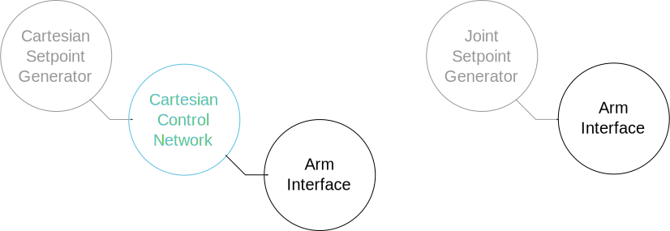

Compositions: designing the network for the cartesian control of an arm
Where are we ? We are now going to try and do simple control of our simulated arm. We are going to do the integration of the control components and UR10 arm on Gazebo from scratch. However, we are going to see later than Syskit allows to make this integration generic, so that it can be reused.
Below, the parts we will handle on this page are in blue and the things that will be handled later in grey

In Syskit, one has to declare how components must be connected together to form a function, and then can request the system to actually run that function. This page deals with the first step (design). The next page will create the command generator, and we will then deploy the network and run it.
But let's not get too much ahead of ourselves. We will need to first install the control package that will implement the control.
Installing the necessary packages
Packages in Rock as maintained within the overall Rock workspace. Package
related configuration is contained within the autoproj/ folder within the
workspace's root directory (where you originally
bootstrapped). When working in a terminal, you can go
at any time to the workspace's root directory by running acd without
arguments (there's more about acd in this section's Day to Day Commands).
Within the autoproj/ directory, packages are defined within package sets.
These package sets define both how to build the package and where it should be
downloaded from. The default installation imports at least the rock.core and
the rock package sets (see the package_sets section in
autoproj/manifest). The rock package set is where the control packages we
will be using are defined.
Advanced
Finding more about a package using autoproj show
Use autoproj show to find more about a given package. For cart_ctrl_wdls, this gives:
$ autoproj show cart_ctrl_wdls
source package control/orogen/cart_ctrl_wdls
this package is not checked out yet, the dependency information will probably be incomplete
source definition
WARN: control/orogen/cart_ctrl_wdls from rock does not have a manifest
type: git
url: https://github.com/rock-control/control-orogen-cart_ctrl_wdls.git
branch: master
interactive: false
push_to: git@github.com:/rock-control/control-orogen-cart_ctrl_wdls.git
repository_id: github:/rock-control/control-orogen-cart_ctrl_wdls.git
retry_count: 10
first match: in rock (/home/doudou/dev/vanilla/rock-website/autoproj/remotes/rock/source.yml)
branch: $ROCK_BRANCH
github: rock-control/control-$PACKAGE_BASENAME
overriden in rock (/home/doudou/dev/vanilla/rock-website/autoproj/remotes/rock/source.yml)
branch: $ROCK_BRANCH
github: rock-control/control-orogen-$PACKAGE_BASENAME
is not directly selected by the manifest
The "first match" line is always the package set where the package is defined. In this case, the
rock package set, which is checked out in autoproj/remotes/rock/
In this tutorial, we will want to use the control/orogen/cart_ctrl_wdls which
uses the KDL library to do cartesian control of a robotic arm. To install the
package, add it in the layout section of autoproj/manifest:
layout:
- rock.core
- rock.gazebo
- control/orogen/cart_ctrl_wdls
Then, run the following to checkout missing packages but avoid updating the existing ones:
aup --checkout-only --all
And finally build and install
amake --all
Using the installed components
Now that everything's installed, go back within the bundle folder. You may not
use acd for this (more about acd) yet, since the
bundle has not been registered in autoproj.
Compositions declare groups of components and connects them together. Once defined, compositions can be used in other compositions to build more complex networks.
Let's create our first building block, the ArmCartesianControlWdls composition
$ syskit gen cmp arm_cartesian_control_wdls
create models/compositions
create models/compositions/arm_cartesian_control_wdls.rb
create test/compositions
create test/compositions/test_arm_cartesian_control_wdls.rb
As described in our brief introduction, oroGen packages are where
the functionality implemented in the library packages are "packaged" into
things that can be used at runtime. To be used in Syskit, these oroGen
components must be first imported using the using_task_library statement. In
our case, cart_ctrl_wdls, this is done with
using_task_library "cart_ctrl_wdls"
This loads the oroGen project, and imports the components in it to make them
available in the Syskit models. The task models from the oroGen project are
then made available within the Syskit app under the
OroGen.project_name.ComponentName scheme, e.g. the
cart_ctrl_wdls::ToPosConverter component is accessible under
OroGen.cart_ctrl_wdls.ToPosConverter in Syskit.
In case you're not sure about the naming, just add the using_task_library
statement at the toplevel of a file and load it with syskit ide.
Let's do so in our newly created
models/compositions/arm_cartesian_control_wdls.rb. Then, run
syskit ide -r gazebo models/compositions/arm_cartesian_control_wdls.rb
The -r option above instructs syskit ide to load the configuration file
config/robots/gazebo.rb that we
previously created
Note Leave the IDE open, we will reuse it
We now want to build the cartesian control network. What each component does in
the cart_ctrl_wdls project can be found by reading the documentation displayed
in the IDE (at the top of each component's page), and the documentation of the ports (displayed as tooltips).
We will want to run the
control components, and the simulated arm. The latter is represented by a
CommonModels::Devices::Gazebo::Model (we will see what Devices are about at a
later point). So edit the newly-created
models/compositions/arm_cartesian_control_wdls.rb and add the components
require 'common_models/models/devices/gazebo/model'
# Load the oroGen project
using_task_library 'cart_ctrl_wdls'
module SyskitBasics
module Compositions
class ArmCartesianControlWdls < Syskit::Composition
add OroGen.cart_ctrl_wdls.WDLSSolver, as: 'twist2joint_velocity'
add OroGen.cart_ctrl_wdls.CartCtrl, as: 'position2twist'
add CommonModels::Devices::Gazebo::Model, as: 'arm'
end
end
end
At this stage, we will have to connect the ports together. To see what inputs
and outputs are available, one can have a look at the component's .orogen
files. The alternative is to use the IDE. Click the Reload Models button and
open the composition page:
We may now start adding connections in the composition definition. The as
arguments when adding composition elements create an accessor for the children.
The children ports are then accessible with a _port accessor. For instance,
the ctrl_out port of the CartCtrl component is accessed with
position2twist_child.ctrl_out_port.
Let's connect that one to the WDLSSolver twist input, and the WDLSSolver
command to the actual arm command input:
class ArmCartesianControlWdls < Syskit::Composition
add OroGen.cart_ctrl_wdls.WDLSSolver, as: 'twist2joint_velocity'
add OroGen.cart_ctrl_wdls.CartCtrl, as: 'position2twist'
add CommonModels::Devices::Gazebo::Model, as: 'arm'
position2twist_child.ctrl_out_port.
connect_to twist2joint_velocity_child.desired_twist_port
twist2joint_velocity_child.solver_output_port.
connect_to arm_child.joints_cmd_port
end
And hit the "Reload Models" button at the top of the IDE window. Syntax errors (such as a misspelled port name) are shows at the bottom of the view. Just click reload after you fixed them.
Let's inspect the remaining unconnected input ports. There's command,
cartesian_status and joint_status ports that obviously need to be connected
to something. joint_status is the direct joint feedback from the arm:
arm_child.joints_status_port.
connect_to twist2joint_velocity_child.joint_status_port
However, the cartesian position feedback is not directly provided by the Gazebo
model. Fortunately, the control/orogen/robot_frames project provides components
to do the joint-to-cartesian conversion. Add it now to the workspace in the same way we added
control/orogen/cart_ctrl_wdls, import it in the composition
file with using_task_library and reload models within the IDE.
Then, finally add it to the composition.
# This is in bundles/common_models
require 'common_models/models/devices/gazebo/model'
# Load the oroGen projects
using_task_library 'cart_ctrl_wdls'
using_task_library 'robot_frames'
module SyskitBasics
module Compositions
class ArmCartesianControlWdls < Syskit::Composition
add OroGen.cart_ctrl_wdls.WDLSSolver, as: 'twist2joint_velocity'
add OroGen.cart_ctrl_wdls.CartCtrl, as: 'position2twist'
add CommonModels::Devices::Gazebo::Model, as: 'arm'
add OroGen.robot_frames.SingleChainPublisher, as: 'joint2pose'
position2twist_child.ctrl_out_port.
connect_to twist2joint_velocity_child.desired_twist_port
twist2joint_velocity_child.solver_output_port.
connect_to arm_child.joints_cmd_port
arm_child.joints_status_port.
connect_to twist2joint_velocity_child.joint_status_port
arm_child.joints_status_port.
connect_to joint2pose_child.joints_samples_port
joint2pose_child.tip_pose_port.
connect_to position2twist_child.cartesian_status_port
end
end
end
This leaves us with the command port.
The role of this composition is to provide us with a cartesian control of an arm. It currently does that. Leaving the command out of the composition allows us to reuse it with different command producers.
We will now turn this composition into a "component" with a single command input
by exporting the command port on the composition interface. This is done
with the export keyword, in the composition class context:
export position2twist_child.command_port
In the IDE, this is represented as a port on the composition, and a connection between this port and the exported port. These are the only connections that can bind two input ports or two input ports together.